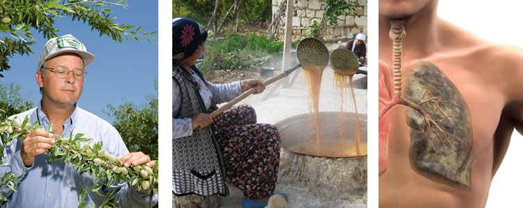
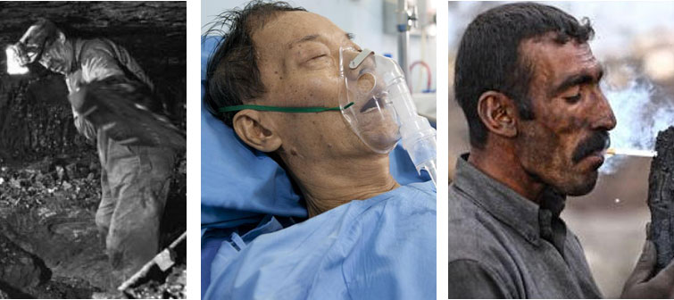
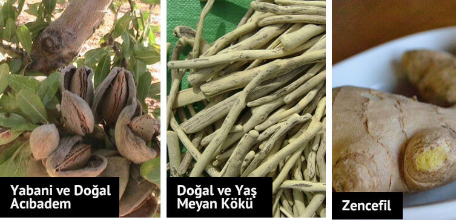
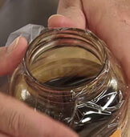
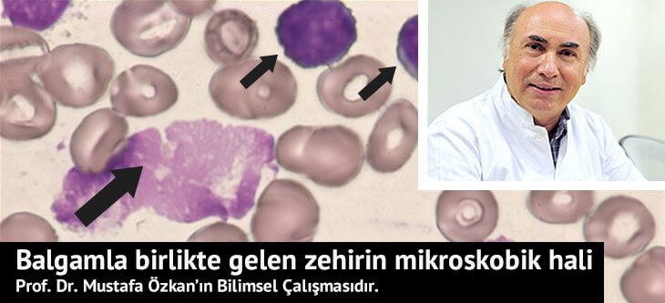
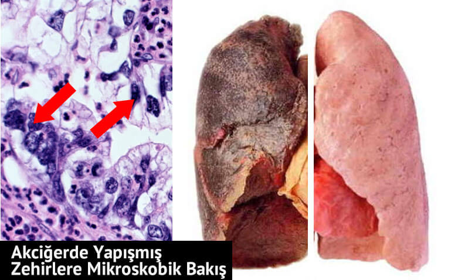
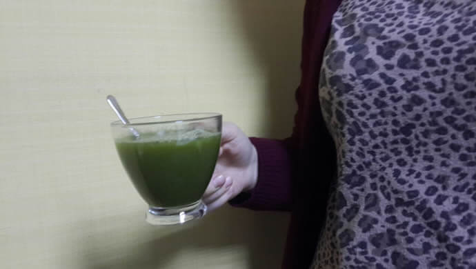
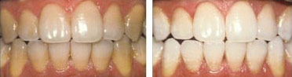

SİGARA İÇENLER DİKKAT!!
AKCİĞERDEKİ TÜM ZEHRİ ATACAKSINIZ
DATÇA’DA Kİ BU ÇİFTLİĞİ TÜM DÜNYA KONUŞUYOR
AKCİĞER DETOKSU MACUNU ÜRETİYOR
Sigara içenler bu habere dikkat. Sigara tiryakiliği dünyadaki en büyük dert fakat bırakamayanlar için devrim gibi bir yöntem doktorlar tarafından da tavsiye edilmeye başlandı
Demirci ailesinin 4. kuşak torunları tarafından yetiştirilen ve sadece Türkiye’ de değil dünyanın en iyi acıbademi olarak gösterilen Datça Acıbademinden bahsediyoruz.
1970’lere kadar ağır şartlarda çalışan madencilerin akciğer zehirlenmelerine karşı tedavi amaçlı ürettikleri ürünü eczahanelere satan Demirci ailesi 1950’lerin başından beri sigara üretiminin fazlalaşmasından dolayı sigaranın yarattığı tedaviler içinde doktorların tercih ettiğini belirtiyor.
Peki Bu Acıbadem Macunu içinde Ne Var? Nasıl Üretiliyor? Acıbadem, Meyan Kökü ve ZencefilNail Demirci, acıbademin tek başına fazla işe yaramadığını ve acıbadem macunu içerisindeki Meyan Kökü ve Zencefil ile birleştiğinde etkisinin ortaya çıktığını anlatıyor.
 Akciğerleri %87 Temizliyor, Peki Nasıl?-

1 Acıbademle Akciğerler Yumuşuyor
Macunlaştırılan doğal acıbadem ile zehirin etkisi ile sertleşen akciğer kanalları ve dokusu yumuşuyor. Burası çok önemli. Çünkü hiçbir sigara için geliştirilmiş ürün bu etkiyi sağlayamıyor.
-
2 Zencefil ile Nefes Darlığına Son
Toz haline getirilerek macuna yedirilen zencefil ile akciğerlerin gözenekleri 3 kat genişleyerek hem nefes darlığı ortadan kalkıyor hemde akciğerlerin daha fazla oksijen alması sağlanıyor.
-
3 Kavruk Meyan Kökü ile Zehri Atıyor
Yaş halinde kavrulan ve özü çıkarılan meyan kökü de macun içerisinde yer alıyor. Bu meyan kökü sayesinde de macunu kullanmaya başladığınız 2. günden itibaren balgam ve karaciğer üzerinden akciğerlerdeki zehir dışarı atılıyor.
İNDİRİMLİ AKCİĞER DETOKSU İÇİN:
BURAYA TIKLAYABİLİRSİNİZDaha Rahat Nefes Alınıyor!
Datça Acıbademinin müşterileri çoğunlukla Türk. Yabancı hastalardan da sipariş alındığını ve yurtdışına gönderdiklerini belirtiyorlar.
Hastaların ilk aldığı etki ise sabahları çok zinde uyanmaları ve daha rahat nefes almaları.
Hastasına göre 3-4 hafta içerisinde ise akciğerlerin büyük bir kısmı yapışan zehirden kurtuluyor.
Balgamın Rengide Değişik GeliyorÖzellikle balgamın renginin açık kahve ile koyu kahve arasında değiştiğini belirten uzmanlar panik yapılmaması gerektiğini belirtiyor. Çünkü balgam ile birlikte zehirde yavaş yavaş vücuttan dışarı atılıyor.
 5-6 Hafta içerisinde En Az %87Akciğerleri ve Vücudu Temizliyor
Prof. Dr. Mustafa Özkan özellikle bu çiftlikte hazırlanan macun için bilimsel bir çalışmada yapmış.
Macunun tadı çok acı olduğundan içine profesörün tavsiyesi ile Lavanta Balı da ekleyerek tadı hafifletilmiş.
Özellikle iç hastalıklar ve akciğer uzmanlarının reçetesiz olarak tavsiye ettiği bir ürün olması ve Türkiye’ de yapılması da bizi gururlandırıyor.
Meyan ve Zencefil Çayları daSigarayı Bıraktırıyor
Ürettikleri meyan kökü ve zencefil çayı karışımlarının da sigara öncesi içildiğinde sigara içmeyi ortalama 3-4 saat engellediğini ve günde 2 bardak içerek sigarayı %87 en az içmeyi azalttığını belirtiyorlar.
Siparişlerin Çoğu DoktorTavsiyesi ile Geliyor
Çiftliğin sahiplerinden Nail Demirci, özellikle siparişlerin çoğunun kendilerini destekleyen doktorların hastalarından aldığını ve çok sipariş olsa da yetiştiremediğini fakat müşterilerin kendilerini tanıması için bir web sitesi yaptırdığını ifade ediyor.
Bizde kendilerini desteklemek ve tüm dünyada yayılması dileklerimiz ile birlikte web sitesi linkini ve adres bilgilerini de aşağıda gönderiyoruz.
Türkiye’de Böyle Üreticileri DestekliyoruzİNDİRİMLİ AKCİĞER DETOKSU İÇİN:
BURAYA TIKLAYABİLİRSİNİZ-
Sultan Özfidan
nasıl kullancaz bunu bide fiyat ne?
Barış Yıldırımmacunu sabah aç karnına ve çayı da canın sigara istediğinde içmelisin diye söylediler bana. bakalım kargom geldiğinde bu şekilde deneyeceğim.
Said YılmazBarış kardeşimin söyledikleri doğru. Macunu sabah 1 kaşık olarak alın ki vucüt sigara zararlarından ve alışkanlığından kurtulsun. Meyan çayını ise gün içinde canınız sigara isterse için , isteğiniz nasıl geçtiğini göreceksiniz. Ben sigarayı tamamen bırakalı 8 gün oldu , bu macun ve çaydan Eylül ayında çiftliğinden almıştım. Yani herhalde 40 gün sürdü tamamen bırakmam. İlk sigarayı bırakmaya çalıştığımda günde 3-4 fincan çay içiyordum , ilk 7 gün çok zor oldu ama 40. gün sonunda sigarayı tamamen bıraktım artık resmen canım istyemiyor. Hatta yanımda içenler olunca mişdem bulanıyor. Anlayacağınız doğal birşeyler yeyip içtikte zaten bünye zararlı şeylere karşı duruyor. Bu fırsatı bize sunan pamuk yanaklı Demirci ailesine teşekkür ederim.
Zeynep Aksumacun cam ise alırım yoksa imkanı yok evime sokmam. madem doğal diyorsunuz cam kavanozda mı bu?
-
Hasan Yeşiltepe
Sigarayı bırakmak zorunda kaldım çünkü sağlığım tehdit altındaydı. Bende bu çıkmazın içine düşmüş ve çıkamıyordum. 1 sene once bu macun hakkında 1-2 sohbet çalındı kulağıma ve denemeye başladım. Aradaki sonuçları size göstermem gerek. Lütfen akciğerlerimde ki sigara etkisini kendi gözlerinizle görün ve lütfen sigaradan kurtulun. Bana tekrar nefes aldığımı hatırlatan , öksürük krizlerinden kurtaran , sıhhatimi tekrar kazanmama yardım eden acıbadem macununu hazırlayan herkese teşekkürü borç bilirim.

-
Mesut Koç
siparişi verir vermez aradılar adres teyiti aldılar sağolsunlar ama kargom 3 gün oldu hala gelmedi. kargo firmanızı değiştirmenizi öneririm.
Furkan Damatabi adamlar muğladan kargo gönderiyor. doğal ürün elde edip taze taze gönderiyorlar. fabrikasyon mallar ile karıştırmayın bu tarz organik ürünleri , işinize gelmiyorsa almayın. benim elime 6 günde geçti ama beklediğime değdiği için ağzımı açamam Allah çarpar. Emeğinize sağlık Demirci ailesi..
 Selin Şenyuva
Selin Şenyuvasanırım ben şanslı olanlardanım , izmirde ikamet ediyorum ve 2 gün içinde elime ulaştı kargo. kapıda kredi kartıyla ödedim , birde bankadan taksit yaptırdım :)
Adem Küçüktorunkargo uzun sürdü diyenler çiftlikten gidip alabilirler. adamlar yıllardır zaten çiftlikten satış yapıyorlar.
-
Mustafa Tülek
Normalde hiç alışkanlığım değildir teşekkür etmek ama bu macunu bulan , karışımı hazırlayan hatta bu bitkilere su veren kişini bile ellerini öpüyorum. bu kadar kısa sürede merdiven çıkışımı hızlandıran , nefes aldığımı hissettiren kişilere ne desem az. sigarayı bırakmak için yapmadığım kalmamıştı 15 yıllık tiryakiyim böyle etkili bir yöntem görmedim. Bana bile sigarayı bıraktırdınız ya helal olsun
Mustafa Tülekdetayları ve zamanları çok iyi hatırlamıyorum ama normalde 15 günde bitmesi gereken çayı ben 1 haftada bitirdim. hem canım çok sigara istediği için çok içtim hemde tadı güzel diye içiyordum. macunu her sabah 1 kaşık aldım ve nefes almaya 5. günde başlamıştım. Zaten macunu yutarken daha boğazınızda ki sigara katranını söke söke gidiyor aşağıya.. toplamda 2 ay kullandım ama şuan 20lik gençlere taş çıkartırım gibi hissediyorum , sigarayı bıraktım ve yaşama tekrar tutundum. yediklerimden bile daha çok tat alıyorum artık öyle düşünün. psikolojik olma kısmına gelirsek ben akupuntur mu yaptırmadım elektroni ksigara mı içmedim neler yaptım neler ama hiçbiri sigarayı bıraktıramadı , sadece bu dayının yaptığı Datça Macunu beni bu illetten kurtardı
Mustafa Tülekdilediğiniz zaman arayabilirsiniz. bursa'da ikamet ediyorum ve firmayla uzaktan yakından alakam yok. Tek yapmak istediğim şey ben bu sigaradan kurtulmak için çok uğraştım ve sadece bu şekilde kurtuldum. Şuan neler çektiğini ve neler hissettiğini benden iyi kimse anlayamaz. Sana ve senin gibi düşünenlere yardımcı olmak adına bu kadar yazdım , gerisini istersen telefonda sorabilir ve gerçekliğmi teyit edebilirsin.
-
Hatice Üzülmez
benim yan benchimde çalışan bi bey vardı adam 14 yıllık laborant ve sürekli ağzında sigara var. adam formüllerden karışımlardan kafayı kırmış ağzından sigarayı eksik etmeyen bir adamdı. son 1 aydır sigara içmiyor , geçen gün sordum nasıl bıraktığını o da bana Datça Macununu anlattı. bende siparişimi verdim umarım Murat bey gibi bende bırakabilirim bu illeti..
Aslı Binicimacunun tadı biraz sert Hatice ama çay çok güzel. ben 9. günümdeyim ve çok rahatım nefes alırken zorlanmıyorum , yürürken yorulmuorum leş gibi sigara kokmuyorum. sadece önden bilgilendirmek istedim , iyi günler.
Aslı Binicisıcak suyu bardağa koyup bile demleyebilirsin ama ben french preste yapıyorum. normal demlik yok maalesef iş yerimde.
-
Meral Sandık
2 aylık hamileyim bu karışımı kullansam sorun olur mu?
 Ahmet Tezel
Ahmet Tezelasıl hamile hamile sigara içersen sorun olur. Doğal ürün bal mis gibi afiyetle ye ve hemen sigarayı bırak!
Cansu Akçalısorumsuz insanlıktan nasibini almamış insanların hamileyken sigara içmesini birde toplum bunu içinde açık etmesini hiç anlamıyorum. senin annende hamileyken sigara mı içti ne yaptı da bu kadar ruhsuz ve sorumsuz oldunuz anlamıyorum. kocana da yazıklar olsun , kendi kanından kendi canından doğacak çocuğu senin gibi bir kadından yapıtğı için.
-
Fatma Doğan
hastalığınızı bilmiyorum ama kemoteropi sonrası sigarayı bırakmıştım sonra tekrar başladım. bu macun ile tekrar aynı şekilde hissediyorum ve canım hiç sigara istemiyor.
-
Şahin Küçüktaşkın
tadı çok kötü , ne kadar zorlarsam zorlayayım sabahları içemyorum. içebildiğim günler ise gerçekten kendimi iyi hissediyorum ama bence tadını değiştirmeliler.
Sinem Gezginsigaranın tadı güzel geliyorda ballı macunun tadı kötü mü geliyor. kendinizi zorlamalı ve 1 ay bu macunu yemelisiniz. bu kadar insan sigarayı bırakmış , ispatlanmış bir çözümğün tadına laf etmek günahtır.
Onur Sarızevkler ve renkler tartışılmaz , bence tadı gayet güzel karakovan balı gibi sert ama güzel.
Gülşen Karadudakmacuna bende alışamadım ama çay inanılmaz lezzetli. mayhoş bir tadı var çok hoşuma gidiyor.
 -
Selda Başaran
ellerinde stok kalmadığını en kısa sürede stok geldiğinde bana ualaşacaklarını söylediler. acaba alıp kullanmayan var mı , parasını versem? 1 haftada sigaraya vereceğim parayla ömür boyu sigaradan kurtulabiliyorsam denemeye değer.
Nalan Tokgezenbaşkasından alma sadece bu telefon numarasından al bence. sonuçta sağlıkla ilgili birşey alıyorsun. stok sorununu umarım en kısa sürede çözerler çünkü artık çok meşhur olodular.
-
Abdurrahman Tomurcuk
diş beyazlatma tozum gelmedi, aradım ama ulaşamadım. bana hemen ulaşın!
Abdurrahman Tomurcuksitelerinde 7/24 yazıyor , benim hemen ulaşmam lazım. kargo gündüz gelmiş kardeşim almış kargoyu ve eksik gönderilmiş toz çıkmadı.
Abdurrahman Tomurcuksabah aradılar ve konuştuk. tek paket alınca beyazlatma tozu göndermiyorlarmış.. bilseydim 3lü alırdım madem öyle , ben bu sigarayı içtiğimi hafızamdan silmek istiyorum. dişlerim bu haldeyken bana yardımcı olmalarını dilerdim.
İsmail Ovalıadamların ne suçu var anlamadım. sen yanlış sipariş vermişsin niye sana yardımcı olsunlar ne yapsınlar eve gelip dişlerini mi temizlesinler? kullan ilk kavanozu sonra 3lü alırsın eğer o zaman göndermezlerse burada şikayetçi olursun. bu arada bende teyzem için tekrar sipariş verdim , kendim kurtuldum çok şükür şimdi sıra teyzemde.
Zeliha Yalındiş tozunu mutlaka kullanın çok kısa bir süre içerisinde dişlerimi oldukça beyazlattı
 -
İpek Koparan
sadece bende mı aşırı yemek yeme isteği yapıyor acaba? yorumlarda başka kimse de görmedim?
-
Yudum Durak
çaya bayıldımm bayıldımmmm. çayın içine sabahları 1 kaşık macun katıp öyle tüketiyotum , yanımda sigara içenlere artık nefretle bakıyorum. elimde değil resmen iğreniorum ya çok acayip
-
Sinem Korkmaz
nereden nereye geldim ya , sigaradan nasıl kurtulurum diye googleda geziyordum o haber senin bu kaynak benim derken bir baktım Nail amcanın çiftliktne gönderdiği sigara bıraktırma macunundayım. sipariş vereyim mi vermeyeyim mi bu kaynağa nasıl geldim onu bile anlamadım..
Salih Bilgingalatasaraylı arifin manchstera attığı golu bulmuşsun. şaka şaka bence araştırmaların sonucunda doğru yeri bulmuşsun. hayırlı olsun sinem.
 İbrahim Çapar
İbrahim Çaparahahaha bende başarılı türk girişimcileri haberlerinden geldim. sanırım ortak bir nokta arıyorsak o da Demirci ailesinin sigara bıraktırmada çok başarılı bir işletme olduğudur :)
-
Erdoğan Şıhmantepe
yılarca tatile giderken gördüğüm tabela meğer bu çiftliğe aitmiş. seneye yaza uğrayacağım. o zamana kadar sigara içmeye devam , seneye görüşürüz organik besinci çiftçi kardeşlerim
İNDİRİMLİ AKCİĞER DETOKSU İÇİN:
BURAYA TIKLAYABİLİRSİNİZ